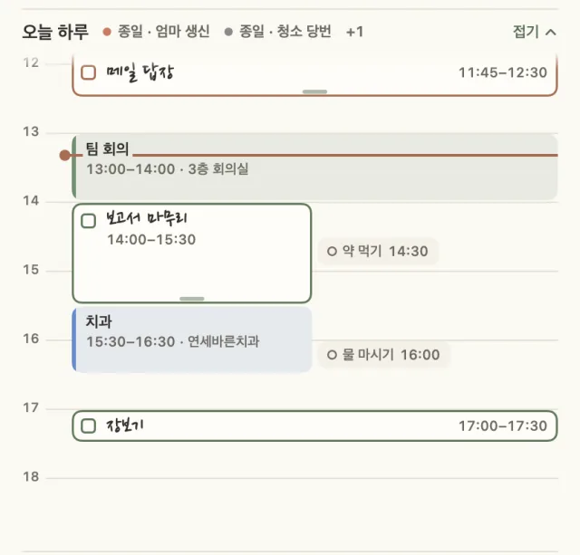
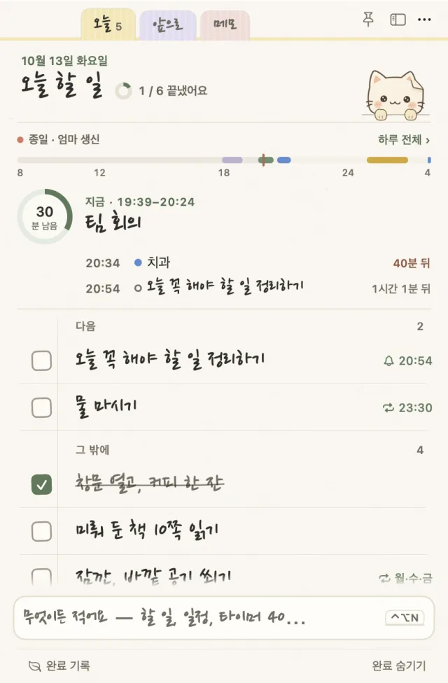
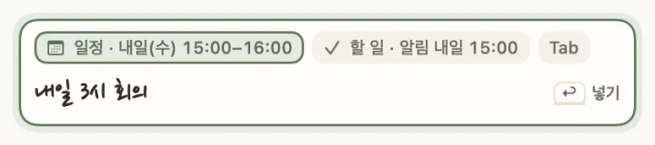
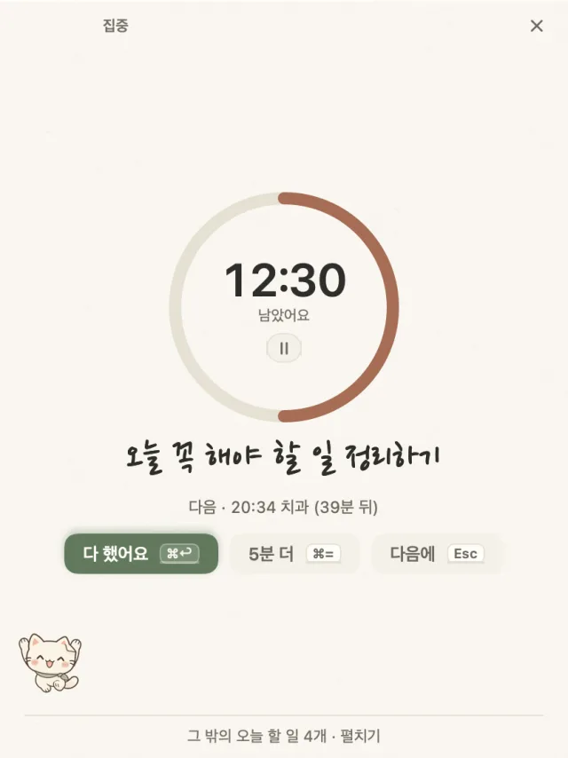
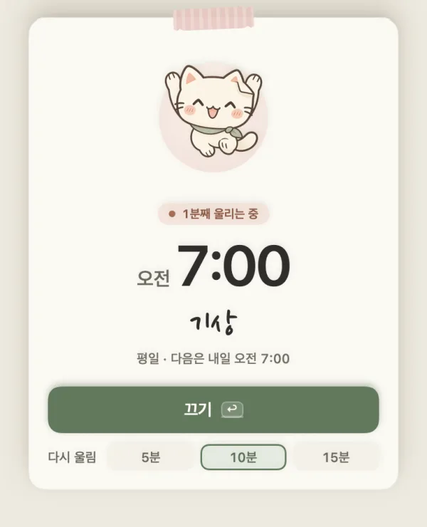
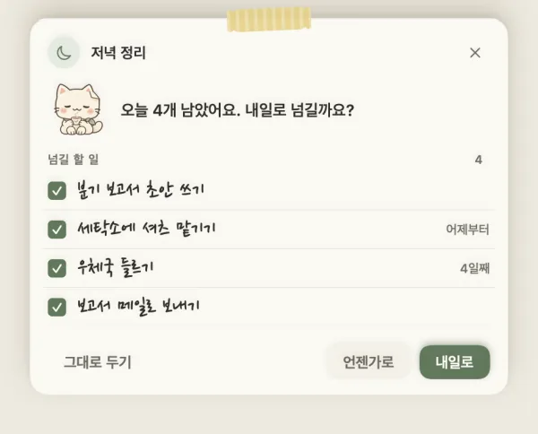
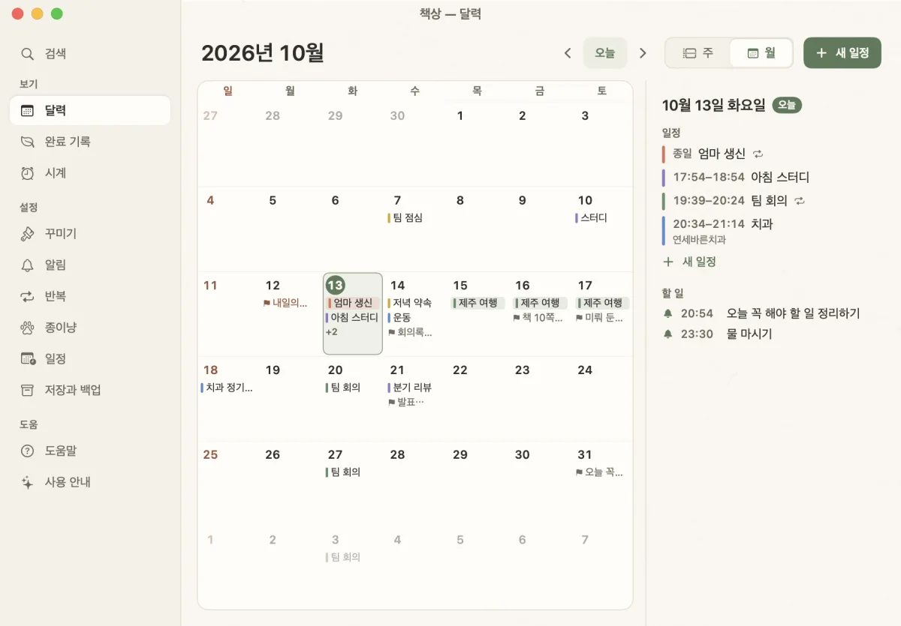

지금이 먼저 보이는 하루 띠
지금 하는 일은 손글씨로 크게, 남은 시간은 동그라미에 보여요. 누르면 그 자리에서 하루 일정표가 펼쳐지고, 블록을 끌면 마우스를 따라오다 15분 칸에 놓이고, 위아래 끝을 끌면 시간이 늘거나 줄어요.

macOS · Windows 할 일 앱
할 일을 적고 체크하는 노트예요. 목록 위에는 지금 하는 일과 남은 시간이, 화면 아래에는 알림을 가져오는 종이 고양이가 있어요. 계정 없이 내 컴퓨터의 파일에 저장해요.
무료 · macOS 14 이상(Apple Silicon) · Windows 10/11 · 한국어 · English · Nederlands


맨 아래 입력 줄에 적으면 할 일인지, 일정인지, 타이머인지 알아듣고 칩으로 보여 줘요. 틀렸으면 Tab을 누르면 되고, 넣은 뒤에는 안내의 ‘바꾸기’로 다른 뜻으로 바꿀 수 있어요.
내일 3시 회의일정 · 내일 15:00금요일까지 보고서할 일 · 마감 금요일타이머 4040분 타이머알람 7시 평일알람 · 평일 오전 7:00
하루 띠, 집중 카드, 알람, 앞으로 탭, 저녁 정리, 그리고 고양이.
지금 하는 일은 손글씨로 크게, 남은 시간은 동그라미에 보여요. 누르면 그 자리에서 하루 일정표가 펼쳐지고, 블록을 끌면 마우스를 따라오다 15분 칸에 놓이고, 위아래 끝을 끌면 시간이 늘거나 줄어요.

‘보고서 25분 집중’이라고 적으면 노트가 카드 한 장으로 바뀌어요. ‘다 했어요’, ‘5분 더’, ‘다음에’ 단추가 있고 뽀모도로 라운드도 돼요.

요일, 소리, 다시 울림을 정해요. 울리면 종이냥이 종을 흔드는 쪽지가 뜨고, 뜬 뒤 1.5초는 키를 받지 않아서 다른 앱에서 치던 글자로 꺼지지 않아요.

이번 주와 다음 주의 날마다 일정과 마감이 함께 보여요. 할 일을 다른 날로 끌어 놓으면 마감이 그날로 바뀌어요.

저녁 8시에 ‘오늘 3개 남았어요. 내일로 넘길까요?’ 하고 물어요. 놓치면 다음 날 아침에 물어요. 검색은 초성(ㅂㄱㅅ → 보고서)도 알아들어요.

Dock 위에서 숨 쉬고 걸어 다니다가 알림을 가져오고, 할 일을 끝내면 축하해요. 가끔 질문도 하는데, 단추로 답하면 그대로 해 줘요(‘5분 쉬어 갈까요?’ → 5분 타이머).

iCloud Drive나 OneDrive, Dropbox 폴더를 저장 위치로 고르면 두 컴퓨터가 같은 목록을 써요. 거의 동시에 고쳐도 양쪽 변경이 남고, 같은 메모를 양쪽에서 고치면 줄과 글자 단위로 합쳐요. 계정과 서버는 없어요.
달력, 완료 기록, 설정, 도움말은 책상 창 하나에 모았어요. 시스템이 어두운 모드면 불 끈 방의 종이 같은 밤 종이로 바뀌어요.

목록 위에 오늘을 어떻게 보여 줄지에 시간을 가장 많이 썼어요. 1차와 2차는 하루 전체를 보여 줬는데, 써 보니 필요한 건 지금 하는 일과 남은 시간이었어요.
하루를 막대 한 줄로, 지금과 다음을 한 문장으로.

6시간 눈금, 시간을 정한 할 일이 막대 아래로.

카드를 빼고 지금 하는 일을 크게. 하루 전체는 누르면 펼쳐져요.

Mac은 Swift(SwiftUI + AppKit), Windows는 Electron + TypeScript로 따로 만들었어요. 코드는 나누지 않고, 두 앱이 같은 시험 사례 표를 통과하게 해서 동작을 맞춰요.
무료예요. 코드 서명이 없는 빌드라 처음 한 번은 열기를 허락해 주세요.